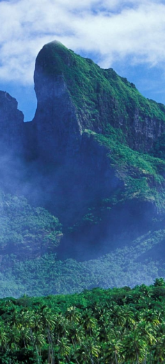

Контакты:
+375(44)747-11-71
+375(29)293-23-23
Наши адреса:
ул.Сырокомли д.28
просп.Победетелей д.17
Гора Бора-бора Один из самых южных туров, которое предлагает наше агенство. включает в себя ряд экскурсий по экзотическим природным ландшафтам, в том числе и с аквалангом. Данный тур является эксперементальным в списке нашех услуг - место дислокации - Тихий океан. Данный тур подойдёт любителям Южных широт и лазурных пляжей. однако наши гиды готовы показать вам и рельефные чудеса вроде гротов и скал. Конечная точка приключений - гора Бора-Бора.
Гора Бора-бора Один из самых южных туров, которое предлагает наше агенство. включает в себя ряд экскурсий по экзотическим природным ландшафтам, в том числе и с аквалангом. Данный тур является эксперементальным в списке нашех услуг - место дислокации - Тихий океан. Данный тур подойдёт любителям Южных широт и лазурных пляжей. однако наши гиды готовы показать вам и рельефные чудеса вроде гротов и скал. Конечная точка приключений - гора Бора-Бора.
1
2
3
...